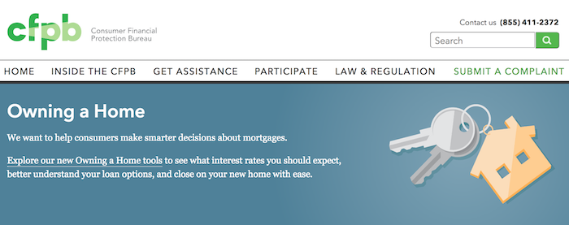

Redesigning consumerfinance.gov
Upgrading the site and its content strategy from reactive and patchwork to sustainable and thoughtful

Background
The Consumer Financial Protection Bureau (CFPB) was created in the wake of the financial crisis to to provide a single point of accountability for enforcing federal consumer financial laws and protecting consumers in the financial marketplace.
The CFPB launched its website, consumerfinance.gov, in 2011. At the time, the CFPB had about 50 employees and was growing rapidly, both in terms of personnel and in terms of policy and communication deliverables. There were few limits on who could make demands of the site, how often, and in what way.
By 2014, the agency had more than 1000 employees. Adding digital technology talent had lagged others, and the site had become a significant stakeholder management problem. And there were just as many external audiences that the site couldn’t ignore: regulated companies, consumer advocates, small practitioners, financial coaches, other policymakers, journalists, civil and criminal lawyers, and consumers themselves of all sorts of backgrounds working on all sorts of problems.
In 2014, the CFPB Office of Technology and Innovation finally added enough capacity to devote a full-time multidisciplinary team to consumerfinance.gov. As the CFPB’s first content strategist, I joined the team, along with four engineers, two visual designers, two UX designers (one also serving as product manager), and a project manager.
The problem
Periodic redesigns in the first few years had served mostly to pay down critical technical debt and deliver on overdue promises to program offices. The limited resources combined with emergent vital needs meant no lasting strategy for the site had been adhered to. The result was a mishmashed tech stack, inconsistent visual style, and IA with little intentionality. The site was out of date, but the bigger problem was the site was never ready to flex for future growth.
The project began with four goals: well-organized content, an architecture that supports anticipated needs, unified visual design, and measurable onsite events.
The work
To scope the project’s content work, I started with a four-part approach that corresponded to those goals:
- Create content and metadata according to the new information architecture.
- Inform platform work through clarity about the challenges of both administering and consuming content.
- Shape content to align with the new design direction, and work through specific designs as we apply them to real content.
- Identify what purposes we’re analyzing content for.
The universe of what we could have focused on was vast; these constraints kept the content work focused.
Giving ourselves foundational knowledge
We began by building up a knowledge base for the team: internal stakeholder interviews; identifying owners for each content type; research into architecture and front-end framework choices; and exploring the existing digital and print visual styles.
I lead a content audit, capturing 20 columns of information about hundreds of pages across the site. I recruited coworkers to assist me and coached them through when to capture everything and when to capture only deviations. We noted missing and bad metadata, opportunities to add more, misused styles, out of date attachments and information, etc.
Researching with users
I supported the UX team in conducting a series of user research efforts. First, we got external research recommendations from stakeholders to give us a sense of expert audiences. We learned that there was no simple way to use consumerfinance.gov. Sophisticated users had to know the whole site to find information they couldn’t work without. It was easier to email CFPB staffers, even for things that were online.
We conducted further research with non-experts who had recently made significant financial decisions in their own lives. We used various methods over the course of our research and iteration:
- Affinity diagrams and journey mapping to understand who shapes their financial decisions and how they make those decisions;
- Card sorts to learn how they think information labels relate to one another and how they would navigate among them;
- Dot voting to see how they feel about different vocabulary choices for labeling similar information; and
- Visual preference testing to hear reactions to different voices, tones, design directions, and media elements.


We learned that people took advice from sources they trusted for personal reasons, not for expertise reasons. The .gov in the CFPB’s domain wasn’t worth much; friendly, accessible design went a lot further.
Giving the site structure
The UX team introduced cross-site relationships based on metadata that I assigned to different content. Serialized content became a single content type, recent updates, and I developed the metadata taxonomy—categories, topics, authors, etc.—for the log that enabled. I then worked with content owners to set rules for which metadata signaled that recent updates should be embedded in their persistent content.

This went hand in hand with a UI based on longitudinal user journeys rather than parallel task types. It also required navigation menus tailored for each section. The visual designers created layouts, and I worked with them to organize menu options according to a natural flow for the targeted audiences. We kept the copy short and allowed space for expansion. In the present, there was more visual breathing room; in the future, the menus could continue to work without needing additional significant redesigns.
Managing stakeholder input
Getting buy-in on section labels proved the trickiest stakeholder management problem. Senior managers from across the CFPB had concerns with almost every choice, but we needed their buy-in because this governed the site as a whole. At the same time, they were pushing us to deliver to production to show progress for all the time already invested.
To turn this pressure into something productive for the team, I led a meeting for the senior managers in which I explained the site team’s navigation concept and then asked them to comment freely. They began to argue with each other rather than the site team over language, which demonstrated that the necessary condition for progress was agreement amonmg them more than a change in our work.
Within a few weeks, we had buy-in to represent navigation on a beta version of the website with language we already had. In turn, we pledged to continue researching and refining, exactly in line with the way we had hoped to work in the first place. This established a sense of trust that delivering notional work and testing it was superior to defining all design deliverables in advance. When beta.consumerfinance.gov launched in 2015, it received near-universal praise across the agency.
Defining content governance and workflow
Migrating content to the new site required coordinating a number of pieces: drafting, shaping content to the visual design components, circulating for review, and publication. I set up an agreement with the executive secretary to help us circulate content effectively, first on paper and then as designed. I established a process and timeframes for the site team, so every office that worked with us to migrate knew exactly what to expect. I created copy decks based on the IA work, ran initial coaching sessions on the site’s goals and user-centered writing, and then trusted the program offices to write first drafts.
As we began this work with program offices, we brought on an additional content strategist. I served as the team lead and coached her through managing relationships with program offices. We divided responsibility and, as much as possible, co-located with our respective partners while we worked with them to maintain open conversation. Offices owned the accuracy, goals, and priorities, and the site team owned copyediting and the choices for how to represent the content, in line with those initial four goals.
Results
Because of the agency’s caution about how it affected markets, the full launch of the new site didn’t come until 2017. But the style, voice, and architecture we established and iterated on using beta.consumerfinance.gov continue to inform consumerfinance.gov today.

The voice we established for the CFPB lined up with the lighter, friendlier design style. We focused on being informative over being prescriptive. The hierarchy of information was flexible, depending on office priorities, but it consistently fit the new design elements.
By treating all serialized content types as one type, we simplified content management in the long run. While we were migrating, the metadata tools supported publication simultaneously in the existing and new styles, making the process as seamless as possible for content managers. Creating metadata that enabled embeddable updates reined in users’ confusion at browsing across the whole site. Clear menus made it easier to start in the right place.
The team’s working relationships with program offices as we migrated rebuilt trust that had broken down between content producers and the content management team under the duress of the earlier, harried version of the site.
All the new page and content types had knowable purposes. When we wanted to measure on-site events, it was easy to know what measures worked best for what content types because we understood what those types were trying to do for users.
consumerfinance.gov continues to evolve. You can follow its progress on the cfgov-refresh GitHub repo.